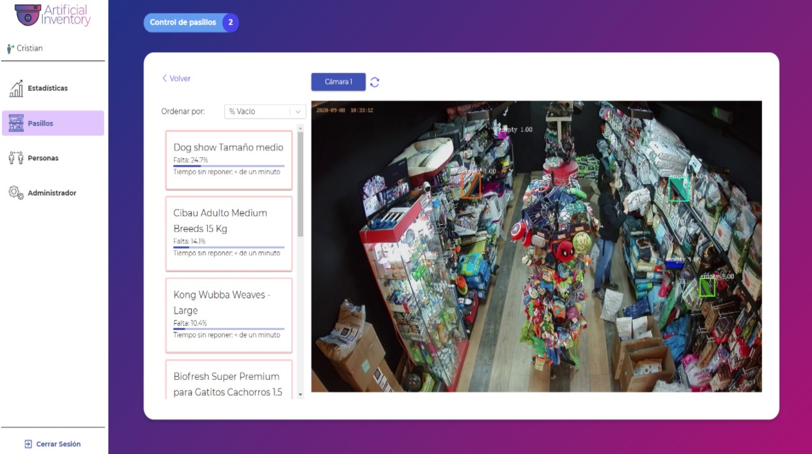
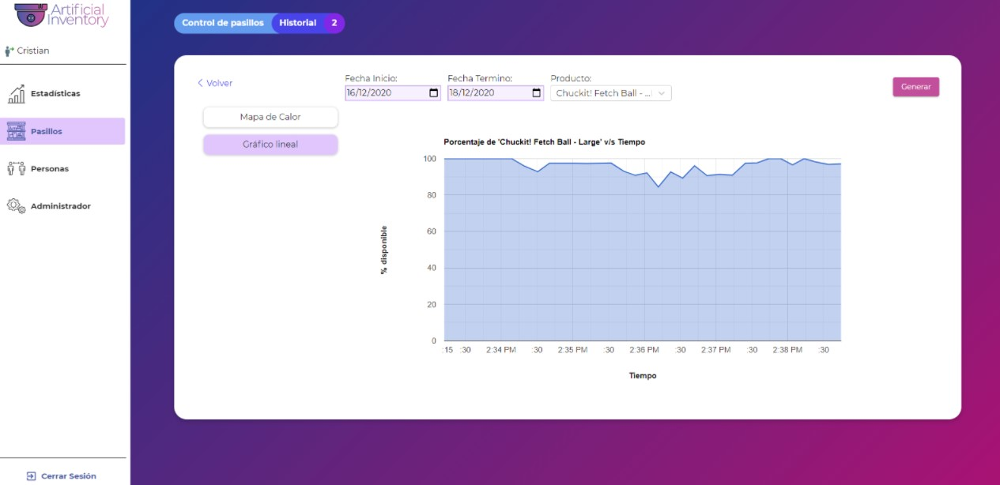
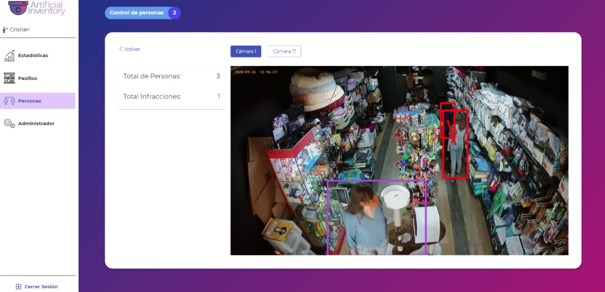
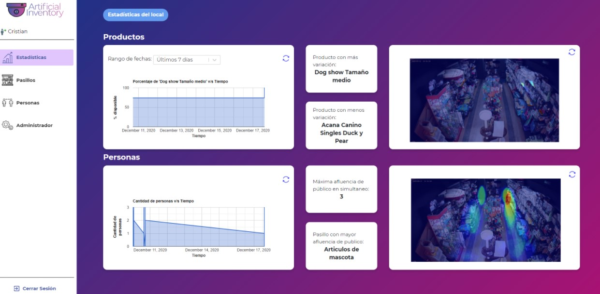

Artificial Inventory
The project
We developed a system for the Software Fair USM 2020, where by using the real time footage from the security cameras, we could detect empty spaces on shelves and people inside the store.
All this was made possible thanks to convolutional neural networks.
Detection
The empty spaces detection was made by a technique called segmentation, in wich we would tell exactly how empty spaces would look like to the neural network.
With this information was possible to tell the percentage of missing products and where it was located.
 On the other hand, for the people detection process, we used image object classification with convolutional neural networks, based on a pre-trained nn YOLO-V3 to detect people inside the store.
 My job
For the correct functionality of this project was needed to make an api to communicate the neural network and all the backend process with the front.
My job was to create the api and process the information given by the neural network and the cameras.